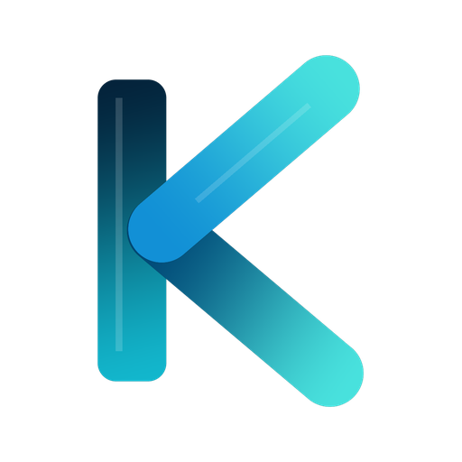

PROYECTO INSIGNIA EN PRODUCCIÓN
v0.5.0-BETA

Kronex Academic OS
Sistema Operativo Académico Personal
Organización académica integral, estructurada en tiempo real.
Kronex es una plataforma móvil concebida y desarrollada por Ocelotl Studio para resolver la complejidad en la gestión del día a día de estudiantes de nivel superior y universitario. Unifica horarios, asignaturas, compromisos académicos y cronogramas en una interfaz coherente y predictiva.
VISIÓN POR COMPUTADORA
Escaneo Óptico de Horarios
Digitalización automática de horarios físicos mediante reconocimiento estructurado de patrones de imagen.
MOTOR PREDICTIVO
Asistente de Contexto KRON
Algoritmo dinámico que analiza la hora, aula y compromisos para proyectar la siguiente acción prioritaria.
INGENIERÍA OFFLINE-FIRST
Sincronización Resiliente
Acceso instantáneo a cronogramas y tareas sin dependencia de conectividad constante a la red.
DISEÑO DE SISTEMA
Experiencia de Usuario Adaptativa
Diseño sobrio de alto contraste fundamentado en tipografía Geist y navegación por gestos naturales.
Arquitectura y desarrollo propiedad de Ocelotl Studio